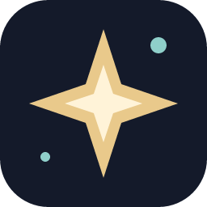

← Back to the organization home page

星笺Starclip
Clipboard manager
A local-first clipboard manager powered by Rust, keeping track of what you copy.
A local clipboard tool that remembers more than your last copy. Built with Rust, Starclip saves text, links and code in your history, organizes them into favorites and groups, and uses Stardraw to create code cards and handwritten notes.
Built with Rust + Tauri 2 + SQLite + Vue 3 + TypeScript + Vite. No account is required, and clipboard content stays local. The latest official release listed here is v0.2.6。
Main features
- Clipboard history: store text, images and file-path references locally in SQLite, with deduplication, search and category filters. View image thumbnails or originals; only file paths are saved, without reading file contents.
- Your own constellation: favorites, permanent retention, colored groups, cards, lists and a quick-access bar. Cleanup offers a preview and always skips favorites and permanently retained records.
- Starcode: save and edit snippets with syntax highlighting, line numbers and JSON formatting; export Markdown or PNG cards.
- Stardraw: turn code into shareable images and text into handwritten notes. Notes use a built-in handwriting engine; after downloading the selected font, PNG export works offline. Since 0.2.5, the main interface can also create Markdown images.
- Appearance and language: five themes—Starry Night, Moonlight, Plain White, Moss and Evening Sakura—with system following, custom accents, gradients and a local PNG sticker. Choose system language, Simplified Chinese or English.
- Quick access: use the default ⌘/Ctrl + Shift + V shortcut or customize it in preferences. Menu bar / tray support and in-app update checks are included, with Tauri signature verification before installation.
- StarPet: an optional original desktop companion, Xingya, disabled by default and unable to read clipboard content. This Starclip feature is developed separately from the standalone StarBuddy project.
- Privacy and local AI: local sensitive-data detection, keyword rules and exact domain rules. MCP, the data CLI and Skill access are disabled by default; history reads return only explicitly selected records and fields.
The README lists GIF animation, OCR, cross-device sync, public sharing links, multi-snippet pages, notes, auto-paste, online execution and AI explanations as unimplemented. Clipboard content is stored locally as unencrypted plain text. Update checks contact GitHub without uploading clipboard content. Since 0.2.4, optional usage statistics offer three modes: off, a random ID per run (default), or a persistent random local ID. Statistics exclude clipboard content.
Current version: v0.2.6
星笺 v0.2.6 Released on November 12, 2026, with Apple Silicon macOS and Windows x64 installers.
- The repository, help page, Homebrew tap and promotional materials now use the StarDreamTech organization address.
- In-app updates now use the organization repository; older versions continue through a compatibility repository.
- The organization Homebrew tap is recommended. Existing installations from the personal tap can still use their original upgrade command.
Highlights from v0.2.5
The following is based on the published Starclip v0.2.5 release notes, published on GitHub on November 10, 2026 at 16:42 UTC.
- Markdown images: three local themes—Plain Paper, Star Purple and Midnight—with adjustable width and font size, and 2× PNG export.
- One record can hold a caption and multiple static images. Image deduplication compares bytes or pixels rather than relying only on hashes.
- Select multiple images, copy them as separate PNG files, export to a directory or use native drag-out support.
- Image viewing adds zoom, pan and full-window preview. History adds page numbers and remembers the selected category, group and settings page.
- Sort favorites by recent updates, recent additions, copy count or a custom order. Add promotional materials directly to favorites.
- Database and JSON backup schemas move to version 5, with imports from JSON v1–v5. Older app versions cannot open the new database schema directly.
Those release notes also state that native PNG export in macOS WebKit / Windows WebView has not received dedicated acceptance testing. Windows multi-image paste and final drag-and-drop delivery on both platforms are not fully verified.
Supported platforms
- Apple Silicon Mac (M series, macOS 11+)Homebrew Cask and a DMG in the release. The cask is arm64 only.
- Windows x64Installer available in the release. There is no separate Homebrew command.
The README does not list downloadable Intel Mac or Linux installers. macOS uses an ad-hoc signature without Apple notarization; Windows has no publisher certificate. Update packages have separate Tauri signature verification.
Install
Use the StarDreamTech Homebrew tap, as on the organization home page:
brew install --cask stardreamtech/tap/starclip
The project README also lists a personal tap for the same cask: brew install --cask cpython666/tap/starclip. If Homebrew reports that the cask is not trusted, the README describes running brew trust --cask stardreamtech/tap/starclip for the installation source, then trying again.
You can also download installers from GitHub Releases:
macOS may block an app that has not been notarized on first launch. Read the release notes and verify the file against SHA256SUMS on the release page before installing.
Based on starclip README、v0.2.5 Release and the organization home page. This page does not claim features or platforms absent from those sources.